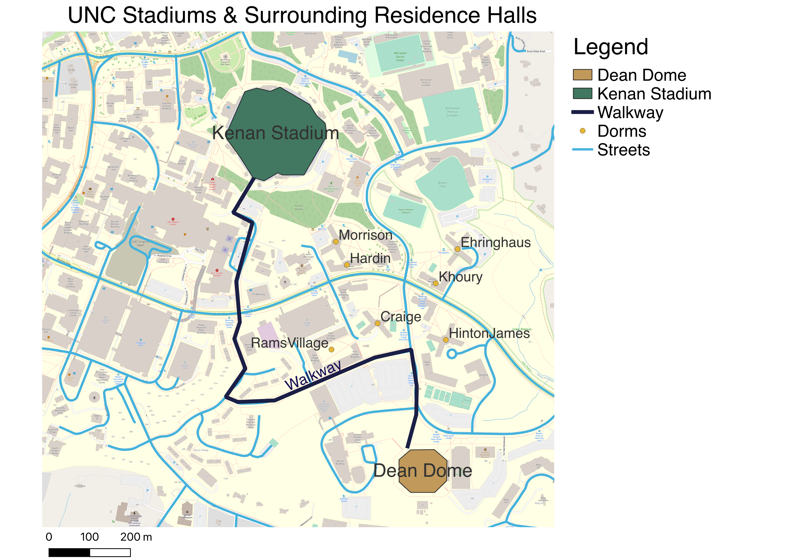

WGS84 Projection of UNC's South Campus
This map includes Kenan Stadium, the Dean Dome, the shortest path between the two, and various residence halls nearby.

Street vector data obtained from https://www.orangecountync.gov/2057/Download-GIS-Data
GeoJSON Format Vectors
Dean Dome GeoJSON: polygon

Kenan Stadium GeoJSON: polygon

Streets GeoJSON: vector data

Walkway GeoJSON: line

Residence Halls: points